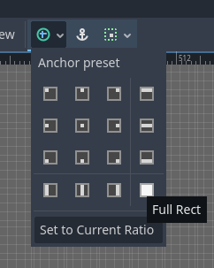
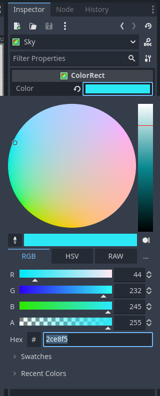
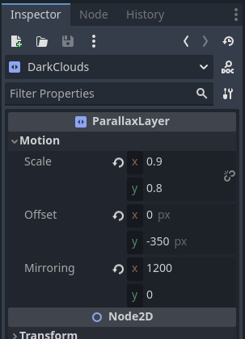
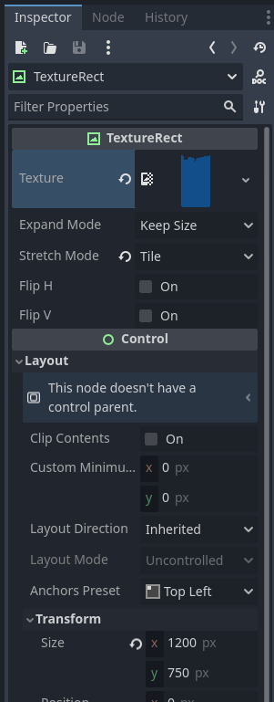
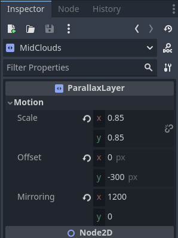
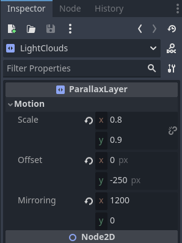

There is something strange going on in our game. Our player is jumping around in a colorless void! Adding some background color and objects can make a game instantly more pleasant to look at. On this page we will add some such elements.
To get started create a new scene. For the root node create a new ParallaxBackground node and rename it Background. Next, create a new ColorRect node as a child of the Background node. Rename the ColorRect node to Sky, select it and then in the 2D scene at the top, select it's anchor preset to be full rect.
Next, go to the inspector. For the color property of the Sky node select what color you want your sky to be (I choose mine to be #2ce8f5.)
After that we will want to add some parallax layers. Parallax layers are objects that can move at different rates relative to the player, creating the illusion of depth. To get started right click the background node and create a new ParallaxLayer node as a child and rename it to DarkClouds. Select the new node and novigate to the inspector. Change the properties to look like so:
There is a bit happening here so I'll break it down. The scale properties is a measure of how much the player movement effects the layer's movement. At 0 the layer moves at the same rate as the player, alwasy staying directly behind them and at 1 the layer does not move at all, staying in the same place. The offset property moves the layer a number of pixels away from it's parent node. And finally the mirroring property tells Godot how many pixels we want before the layer repeats itself.
That may still be confusing. If you want to learn more about parallax layers you can check out Godot's documentation Here
Next up we need to add the sprite to the layer. First import the dark clouds sprite from the Background folder in your VGDC-2025 Assets folder.
If you are not taking this course in person, you can download the assets Here
After that, right click the DarkClouds node and create a new TextureRect node as a child. Select the new node and go to the inspector. Drag and drop the dark clouds sprite from your file system into the node's texture property, then change the stretch mode to tile and the size-x property (under transform) to 1200.
Finally, we can add the rest of the clouds. Repeat the steps you took to make the DarkClouds node twice (or duplicate the node and then edit them), naming one MidClouds and the last LightClouds. Use the respective textures from the backgrounds folder and change the layer's properties in the inspctor like so:
 Go ahead and save the background scene and add it to your world scene. And you are done! Go ahead and mess around with some values then move on to another module!